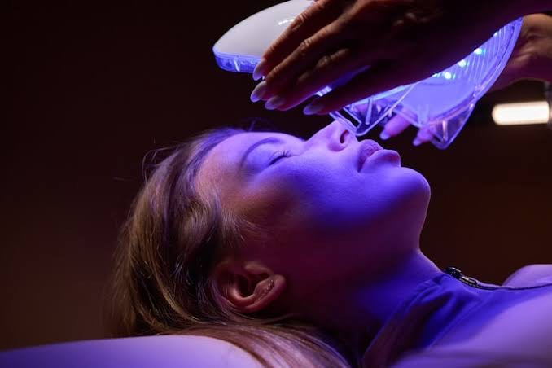

I chose this topic because I am interested in skincare and wanted to learn how technology is changing the way people take care of their skin.

My three research topics
- AI and Skin Analysis — How apps use photos to look at skin concerns.
- Smart Skincare Devices — LED masks, cleansing tools, and at-home skincare.
- Teledermatology — Talking to a dermatologist online.


My paper and presentation
Click a topic to read about two websites I found while researching it.